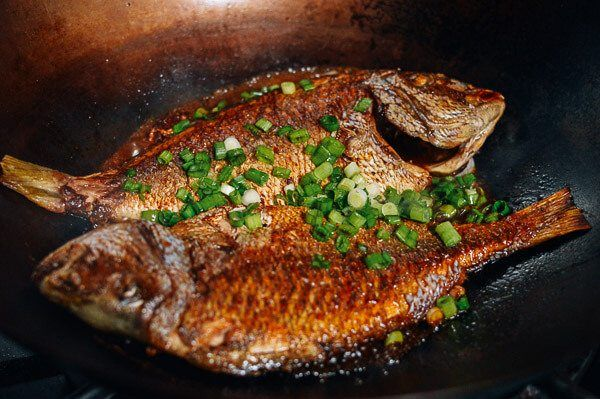

White Sea Dish - Sky Fish Saute

Description
As the strawhat's took off on the knock-up stream,
they found themselves in a new land, Skypeia. Being
in a brand new location, with new customs, Sanji
learned how to make the Sky Fish Saute.
Ingredients
- Horse Mackerel
- Mozzarella Cheese
- Salt
- White Pepper
- Weak Flour
- Egg
- Breadcrumbs
- Salad Oil
- Sauce
- Tomatoes
- Onions
- Ketchup
- Vinegar
- Olive Oil
- Pepper Sauce
- Purple Onions
- Basil Leaves
Steps
- Clean the fish and slice it open. Roll up the
mozzarella and cut them into thin slices.
- Cut up the tomatoes and onions, and blend all of
the sauce ingredients together. (Tomato, onion,
ketchup, vinegar, olive oil, pepper sauce)
- Beat the eggs
- Stuff the mozzarella, salt and white pepper inside
the fish. Mix the weak flour, the beaten eggs, and
breadcrumbs together. Dip the fish into this mixture,
completely coat the fish.
- Pour vegetable oil on frying pan, and heat it to
160 degrees C, before adding the horse mackerel.
Shallow fry for about 5 minutes, flipping fish once
in between. Take fish out and place in a net lined
with paper to drain the oil.
- Thinly slice the purple onions. Serve one fish with
the onion and basil garnsih, with a helping of
sauce on the side.
Return to main page